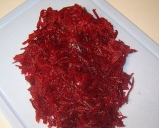

Шаг 1: Подготовим овощи для салата.

Свеклу, огурцы и сладкий болгарский перец необходимо хорошенечко промыть под холодной проточной водой. Затем осушите их при помощи кухонного бумажного полотенца. Свеклу очистите от кожуры и натрите на крупную терку. У огурцов обрежьте основания, а затем измельчите их небольшой соломкой или порежьте на мелкие квадратики. Сладкий перец разрежьте пополам, удалите плодоножку, вырежьте семенную сердцевину и снова ополосните под водой, затем нарежьте его соломкой.
Шаг 2: Соединяем все ингредиенты для салата.
В отдельной глубокой миске соедините измельченные овощи с чесноком, предварительно очищенным от шелухи и пропущенным через чесночный пресс. Тщательно перемешайте, добавьте кориандр, молотый перец, перец чили, уксус и соль, снова перемешайте.
Шаг 3: Раскаляем в сковороде растительное масло для салата.
Теперь нам необходимо раскалить масло, которым будет заправлен наш салатик. Для этого налейте необходимое количество масла в сковороду, поставьте ее на средний огонь и хорошенечко прогрейте. Масло при этом должно начать слегка брызгать. После этого снимите сковороду с огня и уже раскаленным маслом залейте приготовленный салат. Вновь хорошо перемешайте ингредиенты и оставьте в таком виде его примерно на 30 минут.